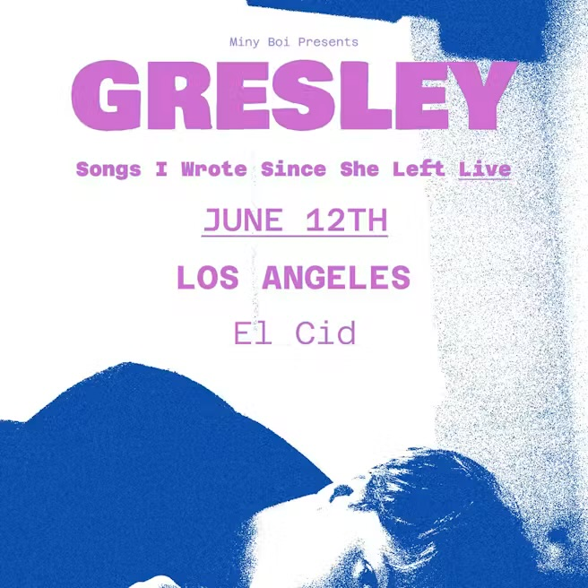
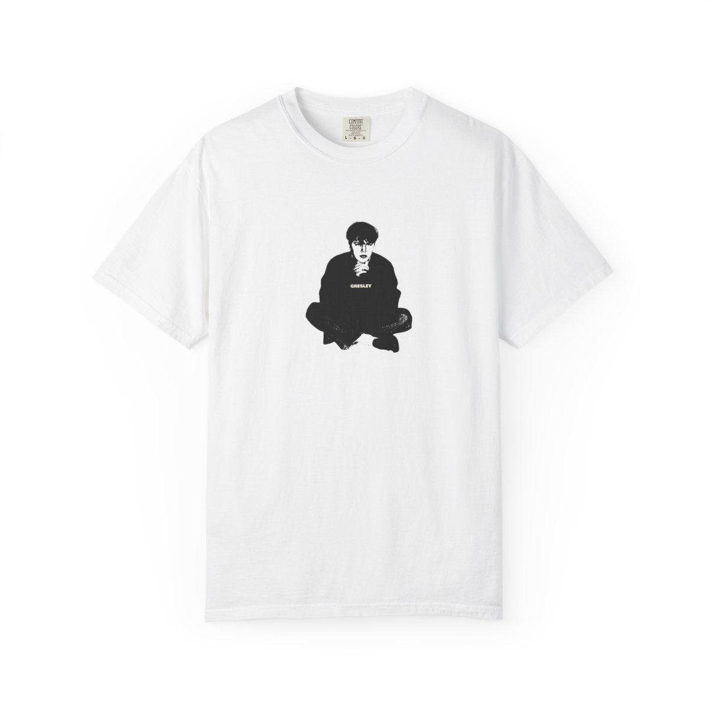
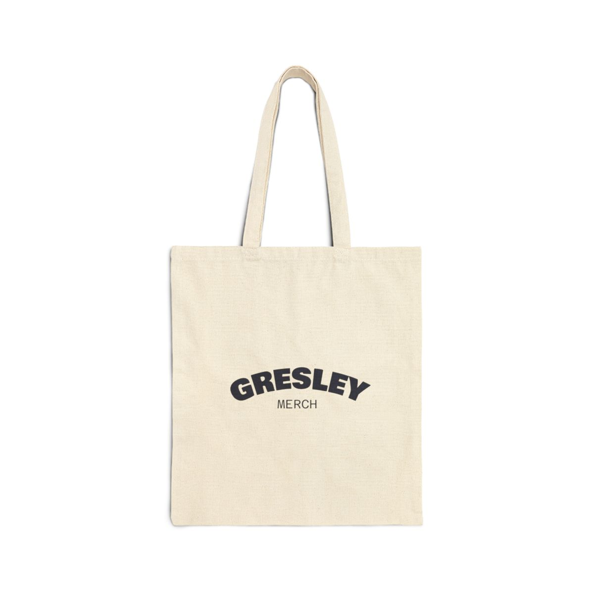

Debut independent album
Songs I Wrote Since She Left
The debut album from GRESLEY has now surpassed one million combined streams across streaming platforms.
Streams
1,000,000+

The unofficial fan site
Music, shows, statistics, photos and updates from the solo project of George Smith.
Latest update

GRESLEY will release his first post-album single, Stunner, on August 7, 2026.
The song has already appeared during recent live performances and follows the release of his debut independent album, Songs I Wrote Since She Left.
Pre-save StunnerAlbum milestone
Songs I Wrote Since She Left has surpassed one million streams across all streaming platforms.

About the artist
GRESLEY is the solo music project of George Smith. The project takes its name from George’s middle name.
George was previously a member of New Hope Club. Following the end of the band at the conclusion of 2024, he began releasing music independently as GRESLEY.
His solo work combines guitar-driven pop, rock influences and personal songwriting, with live performances ranging from intimate acoustic shows to full-band concerts.
Discography
The debut album from GRESLEY has now surpassed one million combined streams across streaming platforms.

Released January 29, 2026
Released February 27, 2026
Released March 27, 2026
Releasing August 7, 2026
Pre-saveLive history

June 12, 2026
GRESLEY performed his first full-band solo concert at El Cid in Los Angeles, marking a major new stage in the project’s live development.

El Cid, Los Angeles
June 12, 2026
By the numbers
Thirteen songs appeared in the first full-band GRESLEY set.
Six known GRESLEY performances have taken place so far.
The June 12 El Cid show was the first concert with a full band.
The debut album has passed one million total streams.
Official items



Watch
Follow and listen
This is an unofficial fan-created website and is not affiliated with GRESLEY, George Smith, his management or record distribution team.